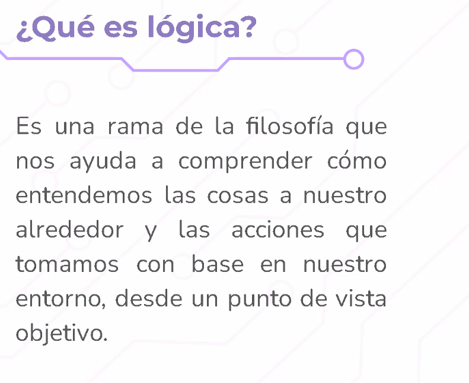

La lógica nos ayuda a
COn la condicion "or" mientras se cumpla una condicion,todo es verdadero. Mientras que en el operador AND las condiciones tienen qeu ser verdaderas para qeu se ejecute como TRUE
En AND con qeu haya uno falso es falso
En OR: Traeme una coca o unas papas:V; Traer una coca:V; traer unas papas:V; traer ambos:V; Nada Traes: F.
En XOR si ambas condiciones son diferentes es verdadero; si ambas condiciones son iguales es falso ( o me voy en coche o me voy en suburbano
En OR; Si la constraseña o el usuario faltan, entonces no dejes pasar
EN XOR: O me das tu correo o me das tu telefono para registrarte (O que me envien el codigo por telefono o por correo; no por ambos
COnka funcion OR NOT; primero haces NOT
Soluciones
Abre consola para ver los ejercicios que hicimso en main.js